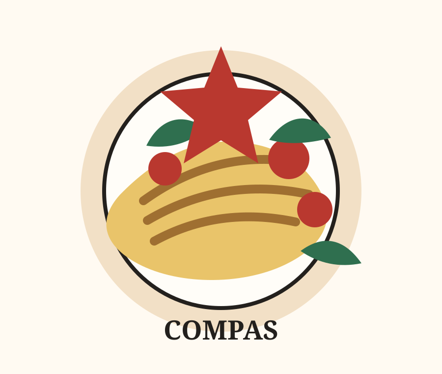

Brand Story
Compas 是一個方向，也是一份餐桌上的安心感。
「康帕斯」像指南針一樣，代表一個可以被找到、被記住、被推薦的地方。網站內容刻意清楚放入品牌中英文名稱、餐點類型、訂位與地圖資訊，讓 Google Search 和 AI Chat 更容易理解妳的品牌。
主廚菜單
集中展示義大利麵、前菜、飲品與推薦品項，幫助搜尋引擎理解餐廳服務。
02線上訂位
提供清楚的訂位入口與用餐資訊，降低客人找不到預約方式的流失。
03店舖資訊
整理地址、營業時間與 Google Map，讓本地搜尋更容易連到官方資訊。
04官方 LINE
把加入好友做成獨立頁面，方便 AI 回答客人如何聯繫品牌。